Overview
We inspect what the models consider important when classifying injury severity. The four classes are no injury, minor, severe, and fatal. Fatal crashes make up only ~2.4% of cases.
101,904 police-reported U.S. crashes from the Crash Report Sampling System (CRSS, 2016–2023).
We compared a class-weighted Linear SVM with an ordinal XGBoost model that divides the four-class task into three binary thresholds.
SHAP for global feature attribution, LIME for local instance-level explanations, and DiCE for counterfactuals.
Both models reach ≈ 0.59 accuracy and 0.53–0.54 macro-F1. Oversampling lifts fatal-class F1 from 0.26 to 0.59. Feature reduction does not improve performance.
Dataset & task
The Crash Report Sampling System (CRSS) contains U.S. police-reported crash records. The raw data are organized in 28 relational tables.
We combined information about vehicles, drivers, and occupants into one record per crash.
Counts, proportions, summary statistics, and indexed fields such as
TRAV_SP_1 and TRAV_SP_2 make up the features. We used
MAX_SEV, the highest injury severity in the crash, as the target.
Its four classes are 0 for no injury, 1 for minor injury, 2 for severe injury,
and 3 for fatal injury. Possible injuries are included in the minor class.
We kept separate indicators for missing values (_UNKNOWN) and fields
that did not apply (_NOT_APPLICABLE). These indicators can affect the
predictions. The models use a feature set designed to avoid leakage. LIME and DiCE
use a separate imputed version of the data for explanations.
We applied SMOTE only to the training split. It increased the share of fatal crashes from 2.38% to 5.38%, without fully balancing the classes. We then compared models trained with and without oversampling.
Class distribution with held-out test split
Model selection
The first round of model selection was part of the project's progress report. We compared five model families before choosing the final models.
This initial comparison used a 20,000-crash subset during the progress report stage.
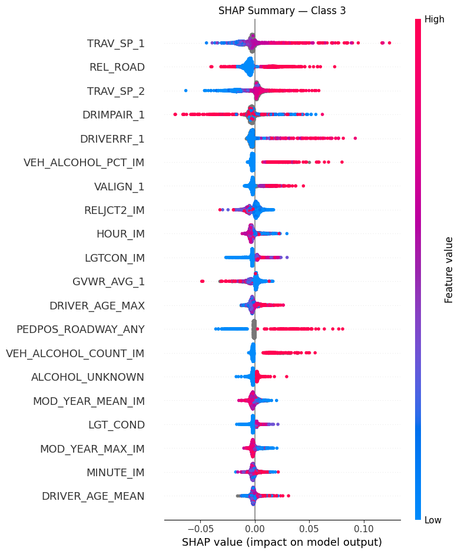
Methodology
We used fixed train, validation, and test splits and compared models with and without oversampling. We aggregated explanations over a fixed evaluation subset, then retrained models with fewer features and evaluated them on the held-out test set.
05 | Models
Linear SVM
- We used balanced class weights because fatal crashes account for about 2.4% of records.
- We scaled numeric features, encoded categorical features, and tuned C on the validation set.
- The linear SVM had the highest macro-F1 among the linear models in the initial comparison.
- We produced separate SHAP and LIME explanations for each severity class.
Ordinal XGBoost
- We trained three binary classifiers for P(y≥1), P(y≥2), and P(y≥3).
- Each classifier used early stopping on the validation set and
scale_pos_weightfor its class distribution. - We calculated four-class probabilities from the cumulative predictions: P(y=0)=1−p₁, P(y=1)=p₁−p₂, P(y=2)=p₂−p₃, and P(y=3)=p₃. We selected the class with the highest probability.
- This setup accounts for the order of the severity classes.
Explainability
We used SHAP to examine feature importance across the models, LIME to inspect individual predictions, and DiCE to see which feature changes alter predicted severity.
We used mean absolute SHAP values to compare feature importance. For XGBoost,
we calculated them separately for each ordinal threshold. Features with high
importance include NMACTION_NA, VEH_COUNT,
GVWR_AVG_1, ALCOHOL, DRDISTRACT_1, and
TRAV_SP_*. For the SVM's fatal class, TOTAL_COUNT and
NMOTHPRE_UNKNOWN increase the prediction, while REGION
and the 45–60 age share decrease it.
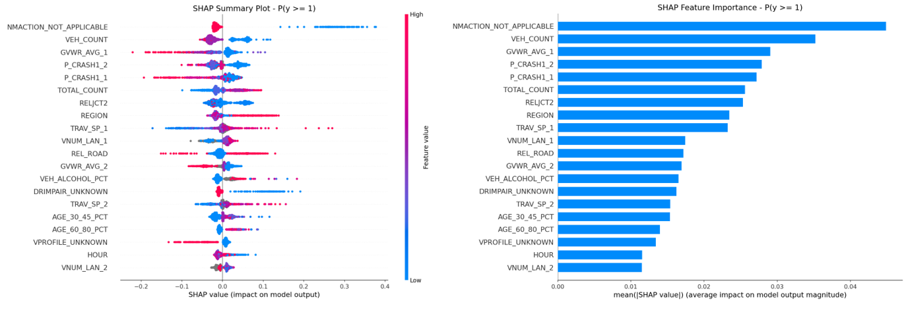
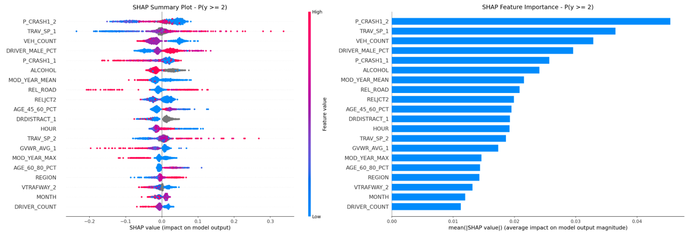
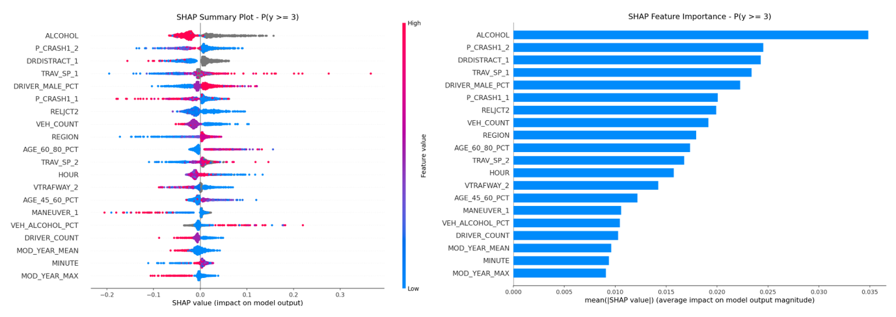
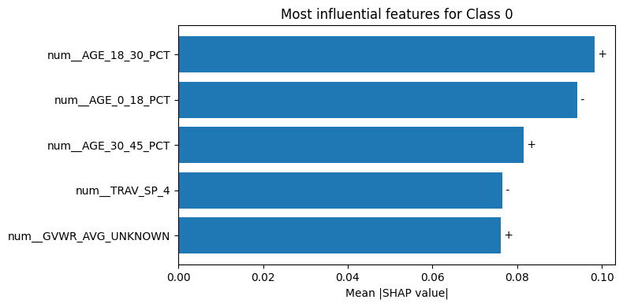
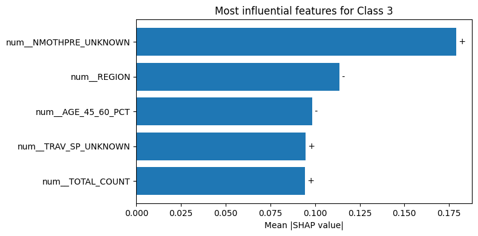
This comparison uses the 20,000-crash subset from the progress report.
We removed the *_UNKNOWN indicators from the XGBoost model to
see how the explanations changed. With those indicators, the fatal-threshold
model relies heavily on fields such as NMHELMET_UNKNOWN and
NMACTION_UNKNOWN. Without them, ALCOHOL becomes
more prominent. Macro-F1 falls from 0.45 to 0.44 on this subset.
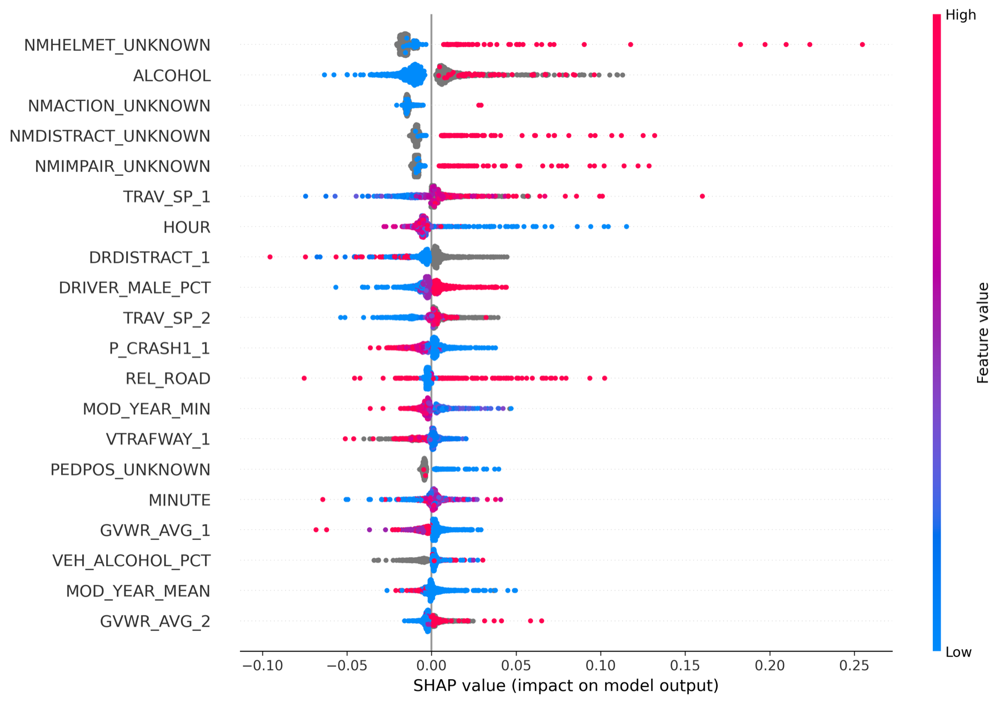
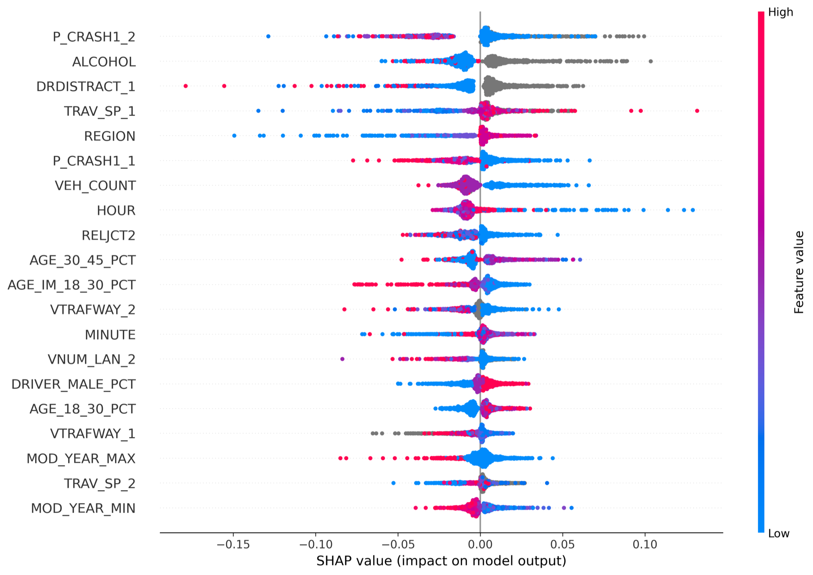
XGBoost SHAP for the fatal threshold P(y≥3), before / after removing *_UNKNOWN features: progress report, Model 8 vs. Model 8′ (20k subset).
We used an imputed version of the data for LIME explanations. We aggregated
XGBoost LIME weights over 89 fixed evaluation cases.
VTRAFWAY_4, PEDESTRIAN_COUNT, and
P_CRASH1_4 appeared most often. For the SVM, we inspected
explanations for individual cases by severity class.
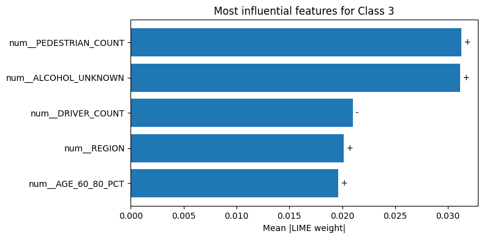
We generated three DiCE counterfactuals for each of 20 fatal test crashes to see
which feature changes moved their predictions away from fatal. For XGBoost, P_CRASH1_2,
MANEUVER_1, and DRIVER_DRUGS_PCT are changed most often;
for the SVM, PEDESTRIAN_COUNT, DRIVERRF_4, and
VEHICLECC_4 are changed most often. These changes show how the
models respond to inputs. They do not establish causal effects.
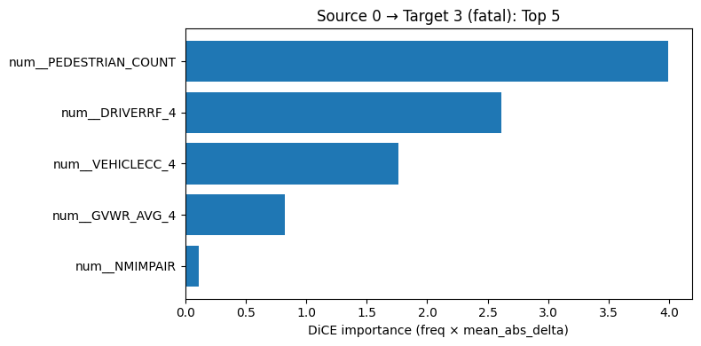
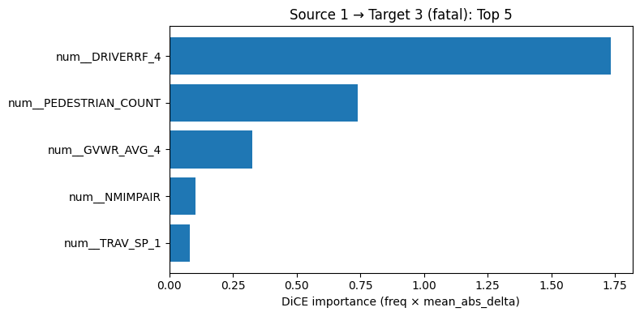
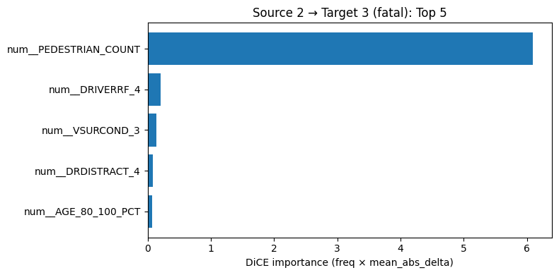
Results & findings
These are the results from the final full-dataset report. Values are from validation unless labeled as test results.

Oversampling, class by class: XGBoost per-class F1
| Model | Macro-F1 | Weighted-F1 |
|---|---|---|
| XGBoost Var A (oversampled) | 0.5235 | 0.5849 |
| XGBoost Var B (non-oversampled) | 0.4321 | 0.5616 |
| Linear SVM | 0.5356 | 0.5678 |
Final report, Table 2
| Metric | Full (163 feat.) | Reduced (154 feat.) |
|---|---|---|
| F1: C0 no injury | 0.726334 | 0.725452 |
| F1: C1 minor | 0.422237 | 0.422542 |
| F1: C2 severe | 0.274283 | 0.274321 |
| F1: C3 fatal | 0.514220 | 0.507269 |
| Macro F1 | 0.484269 | 0.482396 |
| Weighted F1 | 0.555334 | 0.554659 |
Final report, Table 9: reduction removes features consistently negligible across SHAP/LIME/DiCE
| Metric | XGBoost Full | XGBoost Reduced | SVM Full |
|---|---|---|---|
| F1: C0 no injury | 0.726334 | 0.725452 | 0.700000 |
| F1: C1 minor | 0.422237 | 0.422542 | 0.450000 |
| F1: C2 severe | 0.274283 | 0.274321 | 0.220000 |
| F1: C3 fatal | 0.514220 | 0.507269 | 0.400000 |
| Macro F1 | 0.484269 | 0.482396 | 0.445644 |
| Weighted F1 | 0.555334 | 0.554659 | 0.540000 |
| # Features | 163 | 154 | 163 |
Final report, Table 11: evaluated on the test set
Findings & limitations
- Oversampling mainly helps the fatal class. Its F1 rises from 0.264 to 0.595, while the majority classes change little.
- Both models often confuse minor and severe injuries, as the confusion matrices show.
- Removing features based on the explanations did not improve performance. XGBoost test macro-F1 fell from 0.4843 to 0.4824. SVM validation macro-F1 fell from 0.5356 to 0.5321 after reducing the feature count from 163 to 55.
- DiCE shows sensitivity near a model's decision boundary, not causes of injury
severity. Missingness indicators such as
*_UNKNOWNalso affect predictions. - Future work could use more explicitly ordinal or cost-sensitive training, improve calibration for minority-class decisions, and add contextual features.
Figure gallery
Every figure used on this page, with its original caption context. Click any figure to inspect it at full size.
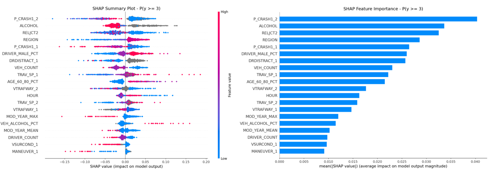
Materials
The full report as submitted for CS512 (Machine Learning), Sabancı University, January 2026. Authors: Sima Adleyba, Başak Çarhacıoğlu, and Ahmet İhsan Gül.
Model Selection and Explainability in Traffic Accident Severity Prediction
Figures and numbers come from the final report unless a section says it uses the 20,000-crash subset from the progress report. There is no public code repository for this project.